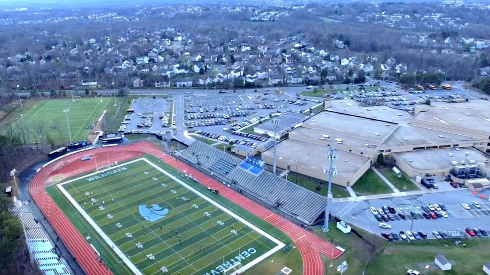

Higher Education

I am a third year student at the University of Virginia in Charlottesville.
I am working towards a Bachelors of Science degree in Neuroscience and a minor in Data Science.
My overall GPA is 3.6. A copy of my transcript through Spring 2023 is attached here:
transcript.pdfHigh School

I attended Centreville High School, in Clifton, VA. My activities included: National Honor Society (NHS) National Science Honor Society (SNHS) Social Studies Honor Society (SSHS) Math Honor Society (MHS) W.E.B. Du Bois Honor Society Future Medical Leaders of America (FMLA) United International Students Association Secretary, Health Occupations Students of America (HOSA). AP Courses: AP Macroeconomics, AP Microeconomics, AP United States Government and Politics, AP Comparative Government and Politics, AP English Language & Composition, AP English Literature & Composition, AP Environmental Science, AP Psychology, AP Art History, AP World History, AP United States History.